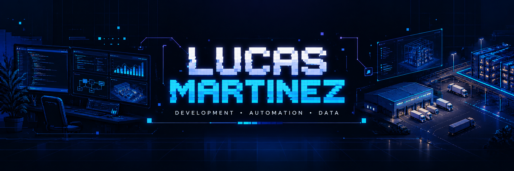

01 / SISTEMAS VISUAIS
Control Tower
Uma única leitura para visualizar indicadores, acompanhamento de processos e sínteses operacionais.
Sou Lucas Martinez. Exploro desenvolvimento de software, automação, inteligência artificial e visualização de dados para transformar problemas reais em experiências digitais.


Gosto de criar soluções que funcionam no mundo real — com interfaces intuitivas, informações organizadas e atenção aos detalhes.
Meus interesses atravessam o desenvolvimento web, dashboards, gestão visual de processos, automação e aplicações de inteligência artificial. Busco combinar a lógica do software com uma experiência clara para quem utiliza a ferramenta.
Este portfólio apresenta uma seleção visual de projetos. Os sistemas operacionais, códigos, integrações e bases de dados permanecem privados.
Conheça minhas tecnologiasCinco perspectivas de tecnologia aplicada à operação, visualização e análise.
Uma única leitura para visualizar indicadores, acompanhamento de processos e sínteses operacionais.
Painéis para acompanhar cobertura, frequência de contagens e indicadores de inventário.
Ambiente visual com caminhões, docas e empilhadeiras para representar etapas de movimentação.
Visão espacial de estruturas de armazenagem para facilitar a compreensão de espaços e posições.
Exploração de sínteses, séries temporais e visualização inteligente de indicadores para apoiar o acompanhamento.
As imagens são capturas tratadas com conteúdo operacional ocultado. Não representam dados atualizados da operação. Não disponibilizo publicamente código-fonte dos sistemas, integrações, bases ou credenciais. A exposição de materiais de terceiros depende de autorização.
Tecnologias identificadas em projetos e estudos. A lista não declara nível de proficiência ou certificação.
HTML · CSS · JavaScript · TypeScript · React
Node.js · Python · APIs · Fluxos digitais
PostgreSQL · Integrações · Dashboards
Git · GitHub · Documentação · Testes
Compreender o desafio, o contexto de uso e as informações que realmente importam.
Transformar regras e dados em interfaces claras, rápidas e responsivas.
Testar, corrigir, documentar e melhorar continuamente as soluções.
Aberto a conversas sobre desenvolvimento de software, automação, interfaces e oportunidades profissionais.